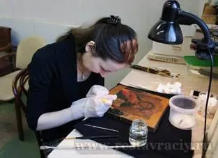
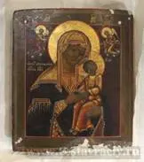

Предметы интерьера
Профессиональная реставрация
Мастерская производит профессиональную реставрацию старинных и антикварных предметов декоративно-прикладного искусства (ДПИ).


Данные мастерской
| Степень разрушения | Размер пяденица | Размер аналой |
|---|---|---|
| Укрепление левкаса, восстановление живописи 10-20% площади | 5 - 10 т.р. | 15 - 20 т.р. |
| Укрепление левкаса, восстановление живописи, 15-25% площади. Позолота, склейка доски | 15 - 20 т.р. | 25 - 30 т.р. |
| Изготовление киота или его реставрация | 15 - 20 т.р. | 25 – 30 т.р. |
О чём рассказывает мастерская
- Кто производит профессиональную реставрацию
- Как найти реставратора
- Торговаться с реставратором
- Реставрация икон в Москве.
- Цена реставрации икон
- Реставрация старинных икон на дереве
- Изогнутые иконы
- Реставратор икон
В материале мастерской
Фотографии и детали



Открыть снимок у мастерской


Посмотреть снимки с сайта мастерской 8
Оригинальные фотографии откроются здесь с сайта мастерской.
 Открыть снимок у мастерской
Открыть снимок у мастерской  Открыть снимок у мастерской
Открыть снимок у мастерской  Открыть снимок у мастерской
Открыть снимок у мастерской  Открыть снимок у мастерской
Открыть снимок у мастерской  Открыть снимок у мастерской
Открыть снимок у мастерской  Открыть снимок у мастерской
Открыть снимок у мастерской  Открыть снимок у мастерской
Открыть снимок у мастерской  Открыть снимок у мастерской
Открыть снимок у мастерской Есть похожая вещь?
Подберите ракурсы для предварительной оценки.